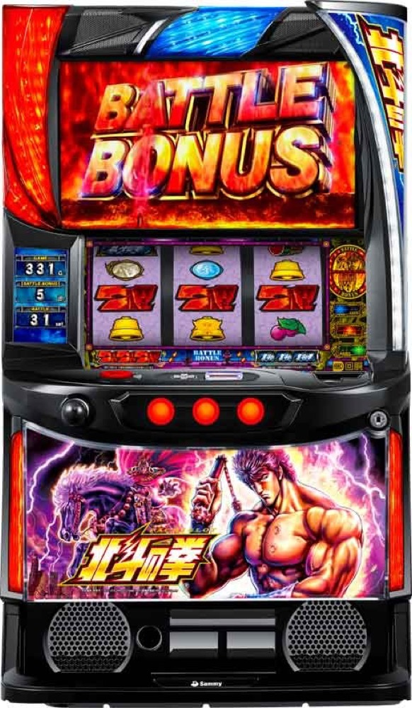

スマスロ北斗の拳
バトルボーナスを継続し、無想転生バトルへ。
- 導入
- 2023
- メーカー
- サミー
- 分類
- パチスロ
主要スペック
初代のゲーム性をスマスロで再構築した定番機。ATまでの平均ゲーム数と投資、無想転生チャンス突破を体験できます。
- AT初当り（設定1）約1/383.4
- バトルボーナスは継続率管理
- 無想転生バトルは継続率約94%
スマスロ北斗の拳の見どころと計算条件
初代のゲーム性をスマスロで再構築した定番機。ATまでの平均ゲーム数と投資、無想転生チャンス突破を体験できます。
スマスロ北斗の拳を数字で早分かり
バトルボーナスからバトルボーナス、無想転生バトルまでの流れと、設定ごとの結果差を固定レートで比較できます。
30G＋αと8Gバトルをセットで再現
バトルボーナスは30G＋αの小役パートと8Gの継続バトルを1セットとして進みます。66%・79%・84%・89%の継続率モードを開始時に抽選し、各バトルのPUSHで継続または敗北を表示します。
トキ共闘などから無想転生チャンスへ進んだ場合は別のPUSHで成功を判定し、成功後は継続約94%の無想転生バトルとして連数を積み上げます。
設定1・2・4・5・6の公開値
通常設定1・2・4・5・6から均等抽選し、設定3と設定Lは対象外です。BB初当りは設定1約1/383.4、設定2約1/370.5、設定4約1/297.8、設定5約1/258.7、設定6約1/235.1を使用します。
抽選設定は最終結果まで伏せ、マイ記録とランキングへ保存します。無想転生チャンス以降の非公表設定差は推測せず、全設定で共通条件です。
平均383.4Gと無想転生の振れ幅
設定1のBB初当り383.4Gと34.7G/50枚を基準にした平均投資目安は約12,000円です。46枚貸し・5.2枚交換で収支を固定し、コイン単価3.3円は荒さの比較に使います。
無想転生は継続約94%でも毎回終了する可能性があります。短く終わる結果も想定内で、上位到達だけでなく何連続いたかと最終差枚を見ることが重要です。
結果画面で確認するポイント
- 抽選設定とBB初当りGの差
- 通常バトルボーナスの継続回数
- 無想転生チャンス突破前後の差枚
- コンプリート到達時は19,000枚で打ち切る
平均Gと投資目安の計算
掲載するバトルボーナス初当り約1/383.4は設定1基準です。当サイトでは50枚あたり34.7G、1,000円46枚貸しの固定条件から、設定1基準の平均投資目安を約12,000円と計算します。
シミュレーターでは設定1・2・4・5・6を均等抽選します。設定1・2・4・5・6で公開されている初当り値を個別に使います。公開されていない特化ゾーン・上位到達率の設定差は加えません。 換金は5.2枚交換で固定し、結果とランキングに設定を表示します。
シミュレーション結果の見方
当るまでバトルボーナス・バトルボーナスまでのゲーム数
設定設定1・2・4・5・6から抽選された今回の設定
上位到達無想転生チャンスと無想転生バトルへの到達
最終収支差枚と5.2枚交換の収支目安
結果は自動で「マイ記録」に保存され、同じ機種を何回試したか、最高収支、勝率をあとから確認できます。
簡易シミュレーターについて
バトルボーナス・バトルボーナス・無想転生バトルの流れを固定条件で体験できます。JavaScriptを有効にすると、この位置にシミュレーター、演出、マイ記録、機種別ランキングが表示されます。
結果は娯楽・確率理解のための参考表示です。金銭的価値や交換価値はなく、実際の勝敗や収支を保証しません。18歳未満の方の利用はお控えください。
スマスロ北斗の拳のよくある質問
スマスロ北斗の拳はどんな台？
初代のゲーム性をスマスロで再構築した定番機。 AT初当り（設定1）約1/383.4が主な確認ポイントです。
スマスロ北斗の拳の平均投資目安は？
設定1基準のバトルボーナス初当り約1/383.4と、50枚あたり34.7G・46枚貸しの固定条件から、平均12,000円を目安として表示します。実際の設定や遊技状況で結果は変わります。
設定とゲームの流れはどう抽選する？
開始時に設定1・2・4・5・6から1つを均等抽選し、バトルボーナス、バトルボーナス、無想転生チャンス、無想転生バトルの順で到達を判定します。設定は最終結果とランキングに表示します。
収支はどう計算する？
1,000円46枚貸し・5.2枚交換の固定条件で投資、換金、収支目安を計算します。実店舗の再プレイ、持ちメダル、端数処理は含みません。